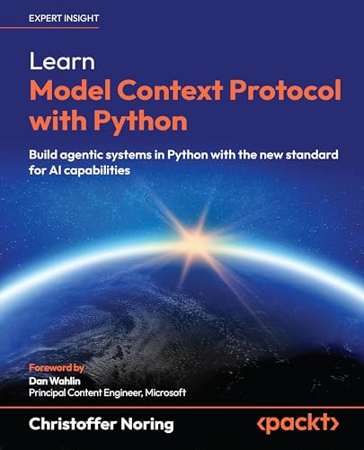

Writing / Book review
Learn Model Context Protocol with Python: Building Agentic Systems on MCP
I read Christoffer Noring's guide to the Model Context Protocol in Python, and rate its servers, clients, components, and agentic systems on what actually works in practice.

- Book
- Learn Model Context Protocol with Python: Build agentic systems in Python with the new standard for AI capabilities
- Author
- Christoffer Noring
- Publisher
- Packt Publishing, 2025
- ISBN
- 9781806103232
- Assessment
- ★★★★☆ 4.0/5
provisional, based on public materials
VerdictA timely, narrow guide to MCP in Python, strongest on servers and clients, not a general agent design book.
I have wired enough models to enough tools by hand to know what the boring part of agent work looks like. It is not the prompt. It is the glue code. Every new host meant a fresh integration, every new tool meant another round of the same plumbing, and the rules about what the model was allowed to do lived wherever the glue happened to be. That is the problem this book takes on, and it is a real one.
Learn Model Context Protocol with Python, by Christoffer Noring, came out from Packt in a first edition dated 27 October 2025: 304 pages, ISBN 9781806103232, with a foreword by Dan Wahlin. Noring is a Microsoft engineer and an Oxford tutor, and the book reads like it. It is practical, implementation-led, and Python throughout. It is not a standards document, and it is not a theory book about agent architecture. If you want the formal spec, read the spec. If you want a working server and a working client in Python, wired to an agent, this is the book for that job. I read it as a builder, not as a collector, and that is how I am judging it.
What MCP standardises, and why it matters
Before MCP, connecting a language model to real tools meant custom integration for each combination of model, host, and tool. Reading files, querying a database, calling an internal service: each one needed separate code, tied to one provider and one host. Change hosts or models and you wrote the same integration again. The result was hard to test in isolation and hard to reuse, and the rules governing what a model could do were scattered across the integration code. Anyone who has maintained three versions of the same file-reading tool for three different hosts will recognise the feeling: the same chore in three kitchens.
MCP answers that fragmentation by defining a shared way for a host, a client, and a server to exchange context and capability. A model can discover the tools that exist, the data that is available, and the prompts on offer, then call a tool and receive a result in a usable form. MCP does not make a model more capable on its own. It separates the definition of a capability from the code that calls it, so a tool can be written once and used from more than one host, and a host can use more than one server without a fresh integration for each pair. The comparison everyone reaches for is USB-C, and it is roughly right: one plug, many devices, and a long argument about who owns the plug.
That separation pays off in two places. First, testing: a server can be tested on its own, before any model is involved. Second, security: permissions, validation, and logging can sit at the server, where the action takes place, rather than in prompt text or client code, where such controls do not belong. A prompt is not a security boundary, and any book that pretends otherwise is selling something.
Timing is the other half of the story. MCP became prominent in 2025, and by the time this book appeared in late October 2025, practitioners were already treating MCP as the interface layer for tool use rather than a side experiment. The book is timely, and timeliness has a cost. Protocol versions, Python libraries, and hosted examples keep moving, and some of the specifics in these pages have already moved on. I say where, in the limitations section below. The durable question is whether the book teaches the ideas in a way that survives a version change. For the most part, it does: it starts with servers, clients, and components, then moves to full systems, and that shape survives a version change as an inconvenience rather than a rewrite. A protocol still does not repair a poorly built server. A sloppy MCP server is as unreliable as sloppy custom code, and no protocol can correct a tool that returns wrong data or an action nobody authorised.
| Approach | Best for | Watch out |
|---|---|---|
| Direct tool wiring | One host, one tool, a quick demo | Every new host means new glue code |
| MCP | Tools intended for reuse across hosts | The server still needs to be secured and tested |
| MCP plus a strict server contract | Real work with real data | Vague tool descriptions lead to bad tool choices |
MCP servers
A server is where a capability lives. Noring's server chapters cover tools a model can call, resources a model can read, and prompts that shape how a capability is used. The server also does the real work: reading a file, querying a store, calling another service. That makes the server the right place to think about correctness, because a model sees only the interface the server presents. A vague interface leads to guesswork. An incomplete tool description leads to arguments that do not fit. A server that trusts whatever a model sends will act on input that nobody checked, and that failure belongs to the server, not the model.
Tool contracts come first, and Noring is right to put them there. Each tool needs a name that states what it does, a description that states when to use it and when not to, and a schema that states what is required, what is optional, and what counts as valid. That description is not decoration. It is the main evidence a model has for choosing one tool over another and completing its arguments correctly. Get it wrong and everything downstream gets quietly less reliable, which is the worst kind.
Failure handling matters too. A tool should return a structured error when something goes wrong, saying what broke and what would help. That gives a model a chance to request missing information, try different input, or stop cleanly. A query that finds nothing is not the same as a query that failed, and the server should say which one happened. I have seen agents burn five tool calls on an empty result that was never an error in the first place.
Security sits at the server as well. A tool that acts for a user needs to know who is calling and what that caller may do. Those checks cannot live in a model, and they cannot live in prompt text. The server has to look up permissions from a trusted source, validate every argument, and log what was requested and what was done. Boring work, and the kind that matters most when it is missing.
MCP clients
A client connects a host application to one or more servers. Noring's client chapters cover connecting to a server, discovering what it offers, sending a tool call, and receiving a result the host can pass to a model or show to a user. The client is also where the judgement calls live: which servers to trust, how long to wait, and what to do when a server is slow, unavailable, or wrong.
Discovery comes first. A sound client lists a server's tools and resources on connection and checks the expected ones are present before any real work starts, which catches configuration errors early, when they are cheap. A client that assumes a tool exists fails later, after a model has already selected that tool and a user is already waiting. I would rather find out at startup than in front of a user.
Then comes the loop. A model receives a user request and a list of available tools, selects one, and supplies arguments. The client sends the call, receives the result, and returns it to the model, which then decides whether to call another tool or answer. That loop can repeat, and each round adds latency, cost, and another chance of error. So a client needs limits: a cap on the number of calls, a cap on total time, and a cap on the size of results it will accept. When a server is unavailable, a plan is needed. The options are to retry, to try a different server, to proceed without that tool, or to stop and explain. Each choice costs something, and the book is at its best when it states those trade-offs plainly instead of treating every error as a case for one more retry.
The sequence below sets out that call in order.
The simplified request path below shows the full trip.
Components and capabilities
Servers and clients get most of the attention, but the components passing between them are the real vocabulary of the protocol. Learn those and you know what a server can offer and what a client can expect. Confuse them and the design gets harder to use than it needs to be. The main components are tools, resources, and prompts, with additional capabilities for sampling and for structured interaction. Each one answers a different need.
Tools are for action. A tool performs work, changes state, or retrieves information through a defined operation, then returns a result a model can use. Size matters. A tool that is too broad is hard to describe and hard to validate, because it tries to do too many things at once. A tool that is too narrow forces a model to make many calls to finish a simple task, with more latency and more chances for one call in the chain to fail. The right size is the one you can describe in a sentence without lying.
Resources are for reading. A resource exposes data a model can consult, such as a document or a record, without changing anything. A clear resource design states what data exists, how to find it, who can see it, and how fresh it is. A model that treats a cached value as current can give an answer that was once true and is no longer true. That is a quiet failure, and easy to miss, which is exactly why it deserves a paragraph.
Prompts are for shaping use. A prompt component offers a reusable starting point, such as a template for a common task, that a host can show to a user or a model. A template is a starting point, not a substitute for understanding the task. Templates do not think for you. They just save typing.
Sampling needs particular care. It lets a server ask a client for model output during a task. That is powerful, and it is also risky, because it opens a new path for data to move between components. I wanted a clear explanation of when sampling fits and how a host can limit it, and the book gives that question its due. A book that waved it through would have left a gap.
Building agentic systems in Python on MCP
Once servers, clients, and components are understood, the book moves to full agentic systems in Python. This is where the protocol stops being an exercise and starts being a system. An agent has to decide what to do, in what order, and when to stop, and those three decisions are where most agents quietly fall apart.
Planning comes first. A task should be broken into steps that can actually be performed with the tools available, with a statement of the evidence each step should produce. The sound approach is to state the goal, list the information still missing, and select the next tool on that basis, rather than following a fixed sequence whatever is learned. That lets an agent adapt when a result changes the picture, and it is easier to debug, because each step traces back to a specific gap.
Observation comes second. After a tool call, check the result before moving on: does it match the expected shape, and does it answer the question that prompted the call? If it does, proceed. If not, retry with different arguments or ask the user for clarification. Feeding a result back in without checking it is not a method. It is a hope with extra steps.
Memory and state come third. An agent that works over more than one turn needs to track what it has done, what it has learned, and what remains. That state belongs in a structured form, which is easier to inspect and easier to correct than state buried in prompt text. Prompt text is where state goes to hide.
Limits and stopping rules come last, and they are the most practical part. Cap the number of tool calls and cap the time. State a clear stop condition: the task is done, the information is missing, or the cost is no longer worth it. With those limits, an agent can stop early, say what it did and what remains, and let a user decide what happens next. Without them, loops follow, and loops are not a feature. They are a bill.
That cycle is the heart of the book: ask, act, observe, update, repeat, and stop with a reason.
Strengths, limitations, and what it will not teach
The main strength of the book is focus. At 304 pages, it does not try to cover all of agent design, all of Python, or all of language model engineering. It covers one protocol, in one language, in a clear order: servers, clients, components, then full systems. That narrow scope helps anyone who wants to learn MCP in Python without wading through unrelated frameworks, and it helps a team, because everyone can point at the same reference for server and client work. Focus is underrated. Most technical books fail by trying to be three books.
A second strength is timing. The book appeared in late 2025, when MCP was moving from discussion to adoption, and it treats the protocol as a current interface layer rather than a future idea: a useful companion to broader agent books written before MCP became the standard way to connect tools.
The limits follow from the same facts. The main limit is timing. A protocol that is still changing will acquire new versions, new libraries, and new hosted options after a book ships, and this one has a concrete example. The companion repo targets MCP Python SDK 1.x, and a full chapter goes to SSE, a transport the spec had already deprecated in March 2025. Some imports will not carry over to SDK v2. The ideas survive that; the code listings will need a version check before anyone builds on them. A full chapter on a retired transport is the kind of thing that ages a book in dog years, and it is worth knowing before you start typing.
One thing that keeps the book useful even where the code has aged: the coverage is genuinely full-stack. Servers and clients both get the treatment in Python, Chapter 8 connects servers to Claude Desktop and VS Code agents, and the security and production material is woven into the build rather than bolted on at the end. A protocol book that treats permissions, validation, and logging as part of the server, not an afterthought, earns its keep. That is what saves the book from its own expiry date: the ideas about how a server should behave survive even when the imports do not.
The second limit is scope. This book is about MCP in Python. It is not about agent evaluation, model selection, or the full discipline of running agents in production. Readers who want a deep treatment of evaluation should look for a book that makes evaluation central, such as the evaluation material in AI Engineering, and readers who want a pattern vocabulary should look at Agentic Design Patterns. Judge the book on what it sets out to do: teach MCP in Python. A working MCP example is not a production system. Production also needs monitoring, access control, cost control, and a plan for failure, and the protocol alone does not provide those.
The page counts below place the book next to the other agent books in this batch. Page count is not a measure of quality. It states only how much reading is involved.
A practical study plan and exercise
My advice is to read the book with one concrete capability in mind, rather than reading it as a survey of every feature. Pick a small, well-defined tool, such as a read-only lookup over a set of public documents, then use the book to build a server for that tool, a client that can discover and call it, and a simple agent loop that uses it to answer questions. One thread, from server to client to agent, teaches more than a broad read that never builds a working connection.
For a first exercise, build a server that exposes two tools over a small public data set. One tool lists available items. The other returns details for a single item by identifier. Write the tool descriptions first, before any code, stating what each tool does, needs, and returns. Then build the server and test each tool directly, with no model in the loop. Record the results for a valid call, a missing identifier, and an invalid argument. Those three cases reveal a great deal about the contract, and they take an afternoon.
For a second exercise, build a client that connects to that server, lists its tools, and calls them with arguments from a fixed test script, not from a model. Add caps on calls and time, with handling for a server that is down. Then connect the client to a model and compare the model's tool choices with the fixed test script. Where a model selects a different tool, look at the tool description and the user request: an unclear description or an ambiguous request is usually where the real learning lives.
For a third exercise, extend the agent loop to a task that needs two tool calls in sequence, where the second call depends on the first result. Record the state after each step, then break something on purpose. Make a tool return an empty result and watch what the agent does: stop with a clear explanation, ask for help, or keep calling tools with no progress? Use what you observe to add a stopping rule and a clear message for the case where the required information is simply not present. Breaking your own system on purpose is the fastest way to learn where its manners end.
Who should read it and how it compares
Python developers who build agents, tool integrations, or host applications that connect models to external capability are the main audience. The book also helps engineers who already have a working agent and want to replace custom tool wiring with a shared protocol. It makes that migration concrete by explaining the server and client roles in plain terms, and plain terms are worth more than they sound like.
Readers who want only a conceptual overview of MCP may find the Python focus narrower than necessary. Readers who want a general theory of agent planning will need a companion book. This one teaches a layer, not a philosophy.
Compared with AI Agents in Action, which I reviewed on this site, this book is narrower and more focused. AI Agents in Action is a practical tour of agent-building concepts and tools, with a broad view of actions, memory, knowledge, planning, feedback, and control flow. Learn Model Context Protocol with Python sticks to one protocol layer. It is the better choice for readers who need to implement servers and clients, and the less complete choice for readers who want a broad introduction to agents. The two complement each other. See my review of AI Agents in Action at ../review-ai-agents-in-action/ for that broader tour.
Compared with Building Agentic AI Systems, also in this review batch, the difference is one of level. Building Agentic AI Systems is an enterprise guide to agentic systems, with orchestration, agent roles, governance, and multi-agent design as its main concerns. Learn Model Context Protocol with Python is a protocol guide, with servers, clients, and components as its main concerns. A team designing an enterprise agent system will need both levels: the architectural view from the former and the interface view from the latter. See my review of Building Agentic AI Systems at ../review-building-agentic-ai-systems/ for the enterprise view.
Further reading and public sources
- Packt catalog entry for Learn Model Context Protocol with Python
- AI Agents in Action, reviewed on this site
- Building Agentic AI Systems, reviewed in this batch
Verdict
I give it 4.0 out of 5, and that is my own judgement after reading it. The book does one job well: it teaches MCP servers, clients, and agentic systems in Python, in a clear progression from protocol concepts to working systems. Its narrow scope is a strength for anyone implementing MCP, and its timing made it the right book for late 2025. The costs are real but bounded: some code is already tied to SDK 1.x and a deprecated transport, so check versions before building on it, and it will not teach agent evaluation or production operations. For a reader who needs the interface layer that connects agents to tools, it earns its place on the shelf next to the broader agent books.

Shivam Negi is an AI engineer and Principal Data Scientist who works on evaluating voice agents, small language models, and applied ML. More about me